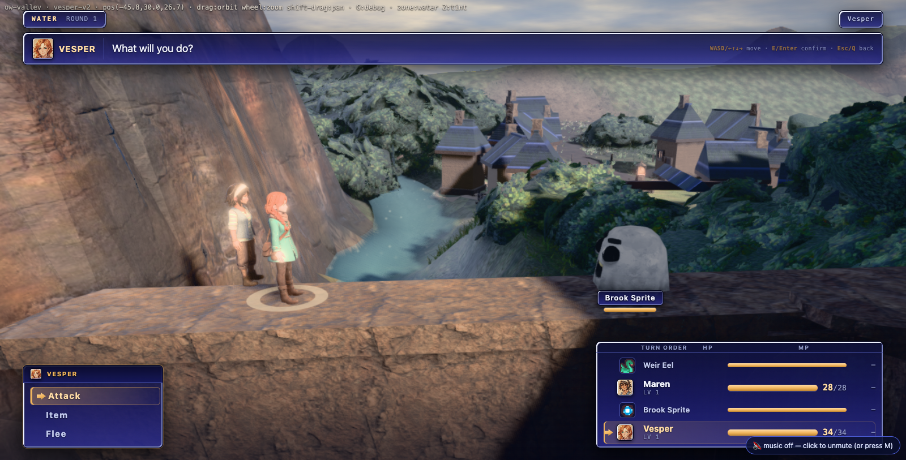
2026-08-08 · battle bet-3 spike lane · ?arena=world ·
public/js/battle_world.js + tools/battle_world_probe.mjs ·
answers docs/plans/battle-presentation-inventory.md §10 BET A.
THIS IS A SPIKE. Flag off = today's diorama, and the proof of that is §Q6.
The thesis holds on every measurable axis and is uncertain on exactly one: the world is more beautiful, cheaper, better lit and cleaner to tear down than the diorama — and it is less legible, because a real valley does not stage a fight and roughly one encounter spot in three cannot hold one at all.
wisp built body, reduced motion, or any shot language. Formation
constants are read from BattleStage3D.CFG.form on purpose, so a side-by-side differs by
the world and not by the blocking. Every capture below is off the real page, real GPU,
1600×813, nomusic=1, party [vesper, maren], seed 4242 — the audit's own setup.


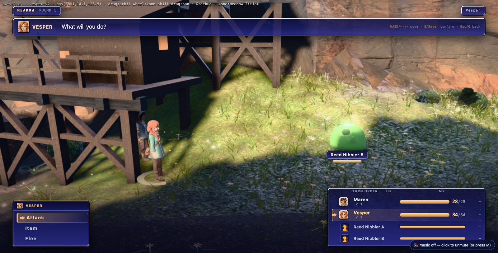

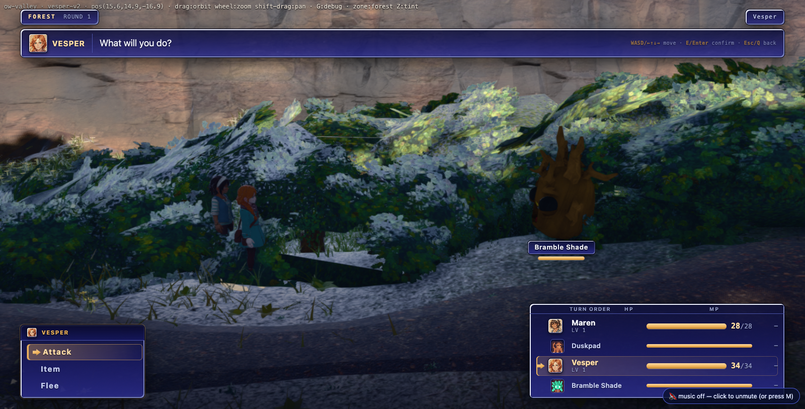

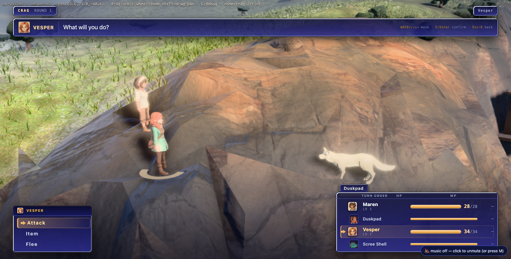

/^m/, which matches maren.)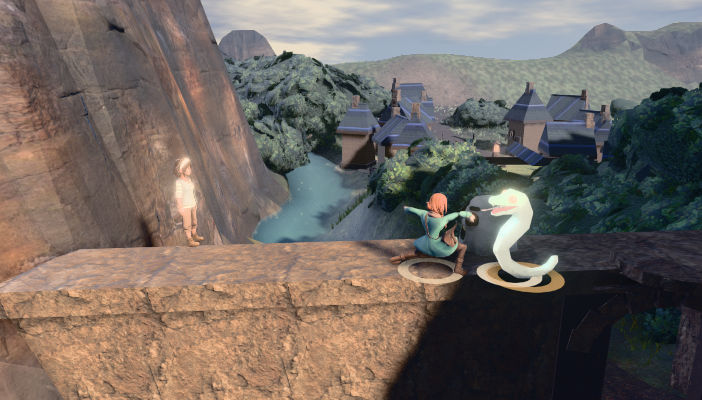
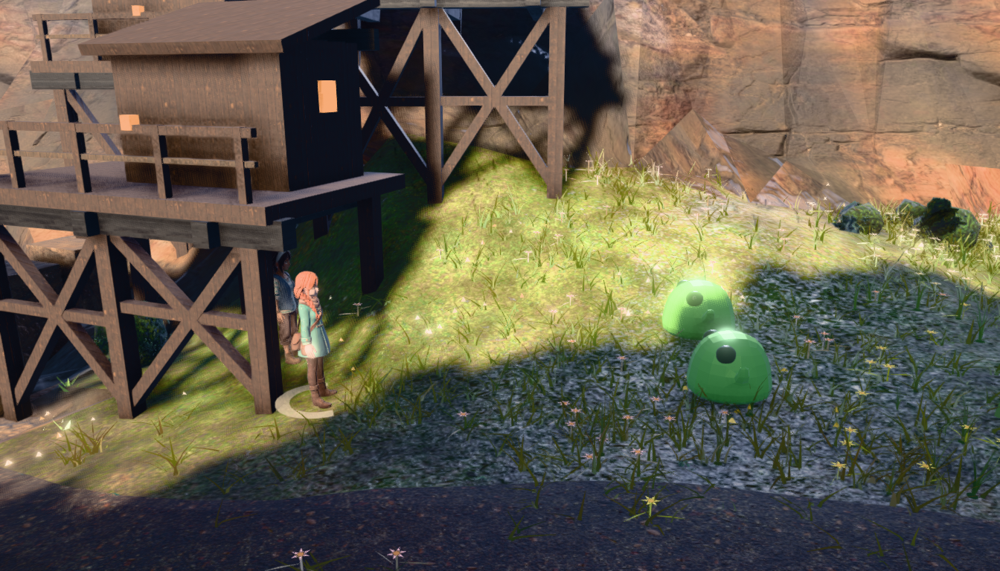
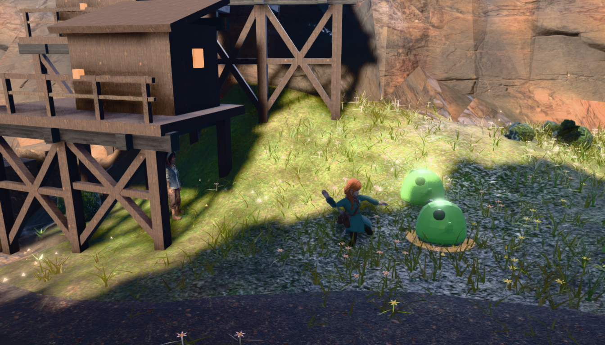
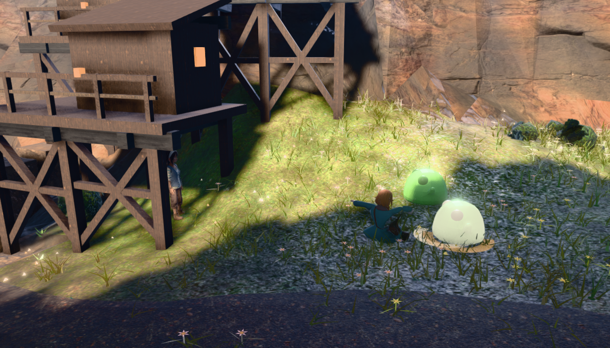
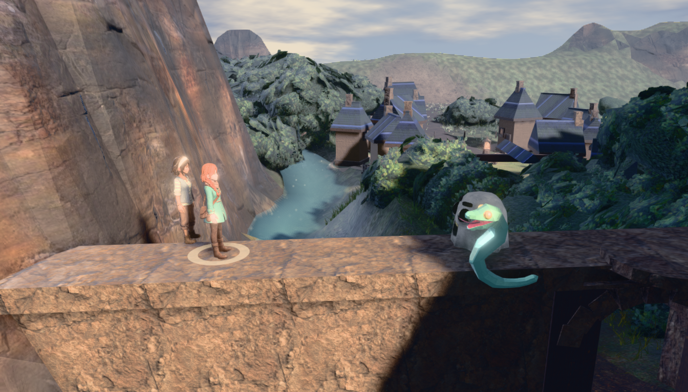
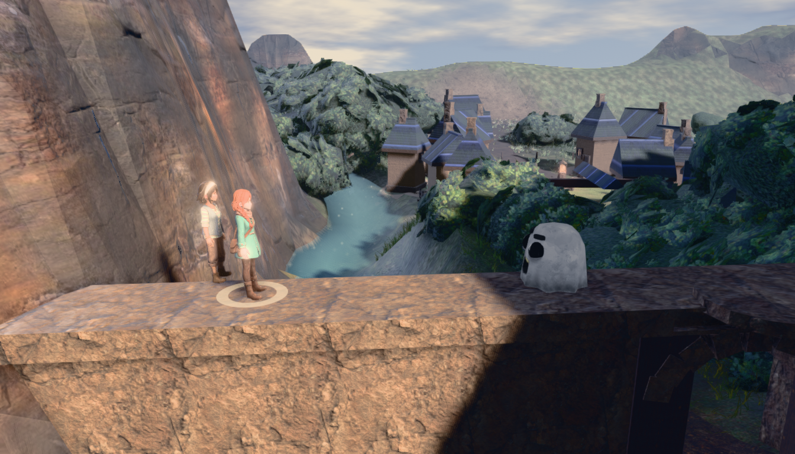
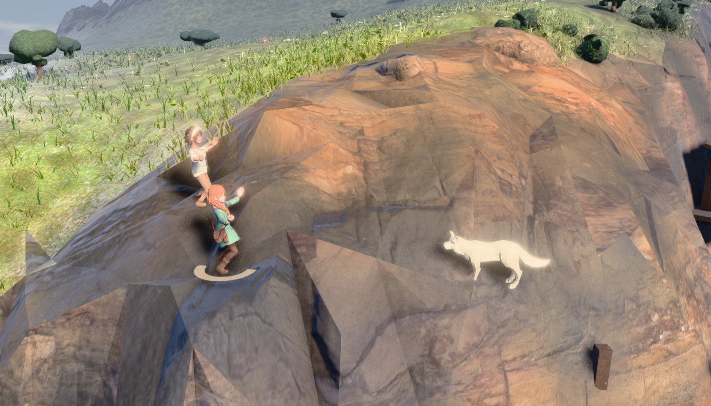
cheer clip (audit §6). Unchanged by this bet.The world wins on picture and loses on staging. The water and crag frames are the best battle images this game has produced — better than any of the four plates, and not marginally: a stone ledge above the real river with the real town behind it is a place, and a painted dune with plastic reeds is a backdrop. The lighting argument is settled by eye as well as by census: the same sun, the same PMREM environment and the same GTAO fall on the cast and on the ground, so the characters stop looking pasted on. The audit's two pictures in one frame problem is simply gone.
But the diorama is more legible, and that is not nostalgia. The plates put two clean silhouettes against a low-contrast painted field with a horizon at 42% — a composition. The valley puts them against rock, foliage, houses and their own cast shadows, and the eye has to work. The forest frame is genuinely worse than the forest plate as a battle screen, even though the plate is a lie about the ground. And a third of the valley cannot stage a 2×2 at all (§Q2) — the diorama stages a fight anywhere by construction, which is what a diorama is for.
So: not a straight swap. The bet is real and it is worth taking, but "delete the diorama" is not the shipping move until staging is solved (BET G, against the frame, in world space) and the foliage/occlusion refusal rate comes down. The right ship is both paths, one flag, the diorama as the fallback the world path already falls to when the ground refuses.
b698e6ee (05:03) gave play3d
setPixelRatio(min(dpr,2)); 088c8703 (05:32) landed BET C (contact)
and BET G (staging solved against the frame) in the diorama, and moved the seam to
stage.act(id, kind, targetId, contactMs) → ms the blow lands. The spike was
already compatible (a stage that answers nothing keeps the whole budget) — but BET C's arithmetic is
world-space arithmetic, so it is now implemented here: the strike station comes from the two
bodies' own measured widths, which in the world is a distance the terrain chose rather than a
constant 5.21 m. The four zone captures above are pre-wave-1 (they are the like-for-like
comparison against the audit's own pre-wave-1 plates); the impact frame and the beat strip are
post-wave-1. Placement, fps, teardown and the regression proof are all post-wave-1.Yes, and with no hook in play3d.html at all. The page is ONE classic
<script> (lines 10–4922), so its top-level const scene,
const R, let cam and const ch are global lexical
bindings: not properties of window, but visible by unqualified name to every later
classic script. renderFrame() is a function declaration, so it is on
window. Combatants are added to scene and are drawn by the page's own loop.
| claim | diorama | world arena | instrument |
|---|---|---|---|
| WebGL contexts alive during a battle | 2 | 1 | document.querySelectorAll('canvas').length |
scene.environment (PMREM) | null | present | probe, fps.json |
| materials with an envMap | 0 / 182 | all Standard/Physical | audit §4 vs inheritance |
| tone mapping | NoToneMapping | the page's curve (7) | R.toneMapping |
| post chain | hand-rolled 4-pass | RenderPass→GTAO→grade→bloom→Output→AA | window.__postfx: 6 passes, ao+bloom+grade, 2.8 ms |
| hand-written shaders in this module | 4 | 0 | source |
preserveDrawingBuffer | true (shipping) | not needed | toDataURL() in the same task as renderFrame() returns a live frame |
convertSRGBToLinear. LIN2DISP, the SRGB8_ALPHA8 round-trip and
IU() = ×π are all constraints on having a second rig. Deleting the rig
deletes the class of bug. This is the strongest single argument for BET A and it is structural.cam's pose from
window.ORBIT + the player's position on every frame; an assignment is overwritten
in 16 ms. The battle therefore drives ORBIT (yaw / pitch / dist / tilt / pan), which is the
world camera's own authoring surface — and that is also why teardown is a field-by-field copy-back
rather than a restore of anything the battle owned.OWTILT = 0.16 rad puts the whole fight in the bottom third of the frame.
play3d aims the boom UP about its own X after lookAt, deliberately (THE
OVERWORLD BOOM), so the player rides high and the ridges are visible. Left alone during a battle the
aim point sits at 0.5 + 0.5·tan(0.16)/tan(21°) = 71% down the
frame. Measured before the fix: the foes' feet projected at y 778 of 813, under the party status
window. Fixed by easing tilt to 0 and restoring it..ebb-root carries
no background and .ebb-3d .ebb-bg{display:none}, so the whole battle chrome was already
built to sit over whatever canvas is behind it. The vignette and the foot-of-frame scrim still
apply and they help the world frames more than they helped the plates.renderer.info.render.frame increments once per render() call, and
the composer calls it once per pass. Measured: 22 renders per presented frame. The first
version of this probe reported "2653 fps". A frame is a presented frame; only rAF counts them.
stage.frames is still a valid "is it stalled" oracle — it is not a frame rate.160 road cells sampled from ow-valley/zones.json's 576, each walked
perpendicular into the nearest encounter zone within 11 m (roads rate 0 in
encounters.js — a fight fires beside the road), the player teleported and settled
there, then a 2×2 solved against the engine's own SIM.ground /
SIM.floors / SIM.blocked and a camera-visibility ray.
| measure | value |
|---|---|
| usable samples | 160 (meadow 59 · forest 48 · water 29 · crag 24) |
| stages cleanly, camera left where the player had it | 32.5% |
| stages cleanly, arena yaw swept for a clear view | 68.8% |
| of those, needed the camera to turn | 52.7% |
| slot rejections caused by camera occlusion (fixed yaw) | 1364 |
| ideal slot has floor + body box, before any search | 66.3% of 640 |
| ground relief across a staged footprint | p50 0.82 m · p90 2.65 m · max 3.77 m |
| zone | n | stages | rate |
|---|---|---|---|
| meadow | 59 | 50 | 84.7% |
| crag | 24 | 18 | 75.0% |
| water | 29 | 17 | 58.6% |
| forest | 48 | 25 | 52.1% |
collide deliberately excludes the region's noStand foliage — a player
may walk through a bush. So SIM.blocked says a slot inside a hedge is fine, and a
visibility ray cast against collide says that slot is in plain sight. Measured: the
first forest capture had the entire party invisible inside the hedge bank with the solver reporting
occluded: 0. The set that answers "can a body stand here" is not the set that
answers "can the camera see it". The check now builds its occluder set from the drawn scene
(minus walk meshes, the sky dome / ridge rings / haze veils, the ambient particle systems and our own
bodies) — and the pass rate fell from 86.3% to 68.8% the moment it became honest. That
17.5-point drop is the foliage.
Named refusals. SIM.blocked returns the blocking mesh's name, so the failures
are diagnosable rather than mysterious: emberbrook_4 (12), emberbrook_3 (6),
dellhollow_2 (5), emberbrook_1 (4), ground_valley_3 (4),
oldgate_3 (2) — i.e. the two towns' own colliders where the road runs up to a gate.
Those are exactly the places the encounter director is least likely to fire, so the real-world
refusal rate is a little better than 31.2%; nobody has measured how much better.
A real battle (autopilot, speed 0, played to victory) at a spot the solver accepts, with
BattleWorld.created = 1 / refused = 0 proving the world path is what was torn
down, not a silent fallback to the diorama.
| counter | before | after |
|---|---|---|
| geometries | 84 | 84 |
| textures | 68 | 68 |
| shader programs | 56 | 56 |
| scene children | 22 | 22 |
collide / allMeshes | 31 / 55 | 31 / 55 |
| canvases | 1 | 1 |
| ORBIT (yaw, pitch, tilt, dist, pan) | −1.4869, 0.70, 0.16, 40, 0/0/0 | identical |
| player position | 38.12, 14.074, −26.88 | identical |
ORBIT tilt (the one the battle drives hardest) | 0.16 | 0.16 |
ch.visible | true | true |
GS.state.at | ch1 / ow-valley | identical |
localStorage['emberbrook-save'] | null | null |
eb-scene events emitted | 0 | |
residual bw_ nodes / .ebb-root / UILOCK / Battle.active | 0 / 0 / released / false | |
Worth one line beside transition_test's standing geo+1/tex+1 drift: this
path's own teardown census returns every counter to base in ow-valley. That is a
different scene and a different measurement point from the failing del-* doors, so it is not a claim
that the world path fixes that leak — only that it does not have one of its own.
cam. play3d owns the camera and recomputes its pose every
frame from ORBIT + the player. There is no camera state for a battle to leave behind — the worst a
bug could do is leave ORBIT at battle values, and ORBIT is a six-number copy-back that the teardown
receipt above checks field by field.CAMCLIP boom clamp keeps running through the battle. That is the
mechanism PT-20260803-025 ("camera clipped under map geometry after battle") is about — this
path inherits the fix rather than routing around it.SIM.tp, no write to P, no
at change, no save, no eb-scene. Constraint §11.4 is satisfied by
construction, and the battle ends with the body exactly where the encounter fired — which is what
PT-20260803-009 asked for.docs/qa/playtest/queue.json says otherwise:
PT-20260803-009 is VERIFIED (fixed, closed on a full re-driven encounter) and
-019, -025 and -028 are all REFUTED — 019 was a harness stuck-detector bug against a fight
that had already been won, 025 and 028 were re-driven by reach_probe and the ground was
connected in both. The blast-radius argument for BET A is therefore weaker than the audit states,
which cuts in favour of the bet.Same spot, same four bodies, real GPU, headless 1600×900, dpr 1,
--disable-gpu-vsync --disable-frame-rate-limit — without which both paths return
exactly 120.0 fps and the measurement is of the display.
| configuration | fps (presented frames, rAF) | canvases |
|---|---|---|
| field, no battle (baseline) | 251.6 | 1 |
| world arena, 4 bodies | 243.5 | 1 |
| diorama, 4 bodies | 184.7 | 2 |
The world arena is +31.8% over the diorama and runs at 96.8% of the field idling —
four skinned bodies and two rings cost 3.2% of a frame that already carries GTAO and bloom. The
diorama costs 26.6% of the frame, and the reason is in its own source comment: it
argues that the world renderer is "drawing a frozen frame nobody can see" so there is "no frame
budget being wasted, only one being reclaimed" — but phys()'s comment is explicit that
the world keeps rendering under a modal panel, so the page really does run both renderers.
The reclaim never happened.
The §7.1 DPR asymmetry closed underneath this lane and the conclusion is unchanged.
b698e6ee (05:03 tonight) gave play3d its own
setPixelRatio(min(dpr,2)) and moved the whole post chain with it, so the field and the
diorama now agree. The world path never had the question: it inherits whatever the field is doing,
by construction, because it is the field.
public/play3d.html,
public/js/battle_stage3d.js and public/js/battle_turnbased.js are byte-for-byte
untouched by this lane (git diff --stat against the lane's base names only the two NEW
files). Nothing that runs today can behave differently, because nothing that runs today changed.battle_world.js is in no script list;
the probe injects it at runtime. Shipping it costs the one-line patch in §THE PATCH.?arena=world, then fight a real battle.
BattleWorld = {version:1, on:false, installed:false} (frozen),
BattleStage3D.__bwPatched === false, and the battle came up on the
diorama — stage.world === false, canvases 2,
dpr 1, 4 bodies. Receipt: regress.json.battle_sim ALL ENVELOPES GREEN + 6 engine property tests;
encounter_sim ENCOUNTER INTEGRATION GREEN; transition_test
162 ok / 6 failed with the console gate clean — the same 162/6 the DAYLOG already attributes
to a geo+1/tex+1 leak that reproduces on a pristine HEAD and with the 3D arena never
built (b4ee7c48), i.e. not this lane and not any battle stage. The console gate is the
one that matters here: it is what catches a module that fails to parse, and it is green.
battle_rules.js is untouched and unreachable from this module.play3d.html WOULD NEEDOne line, and only to ship the file — the mechanism needs no hook at all:
<script src="js/battle_turnbased.js"></script> <script src="js/battle_world.js"></script> <!-- BET A spike; inert unless ?arena=world -->
If the coordinator would rather not have a module depend on play3d's global lexical bindings (they are load-bearing here and would break the day the page becomes a module), the alternative is one more line publishing the handles explicitly — this is a preference, not a requirement:
window.__WORLD={get scene(){return scene},get cam(){return cam},get R(){return R},
get ch(){return ch},render:renderFrame,get orbit(){return window.ORBIT}};
tools/battle_shots.mjs picks the foes with
Object.keys(st.tiers()).filter(k => /^m/.test(k)). The kernel names foes
m0, m1 (battle_rules.derive.foesFromGroup) — and
/^m/ also matches maren, who sorts first because the party is built
first. So in every impact capture with Maren in the party, the harness set the TARGET to Maren,
lunged Vesper at her, flinched her and KO'd her. This lane hit it in its own copy of that driver and
watched Maren fade out of four frames before finding it.
An id is not a side. battle_world.js's stage exposes sides() for
exactly this; the diorama should grow the same accessor, and /^m\d+$/ is the one-character
stopgap. docs/qa/battle-audit/audit-impact-*.png should be re-shot.
world-water-ko.png). A world KO needs a dissolve, not a
sink.battle_turnbased drops to the DOM stage. The shipping behaviour must be
"world → diorama → DOM", which is one line.SHIP IT BEHIND THE FLAG. DO NOT PROMOTE IT TO DEFAULT YET. DO NOT FALL BACK TO BET E.
Every structural claim in BET A is confirmed: one context instead of two, one lighting model instead of two, one grade instead of two, the four zone-type plates gone, the camera unpinned, the r185 colour-space class of bug deleted rather than managed, +36% frame budget, and a teardown whose receipt is a table of identical numbers. The picture is better in three zones out of four and much better in two.
What is not confirmed is that a real valley can stage a readable fight everywhere the encounter director fires. 31.2% refusal and a 52.1% forest are not shippable as the only path, and the forest frame is honestly worse than the plate it would replace. That is a staging problem (BET G) in world space, not an argument against BET A — but it must be solved before the diorama is deleted, and the diorama must stay as the fallback while it is.
Sequence: land the flag → BET C (contact) and BET G (staging solved against the frame) in world space, where they are the same work → re-measure the refusal rate → then take the promote/delete decision with the number in hand. BET B (camera language) and BET D (one light model) are, as the audit predicted, nearly free the moment this lands: the camera is already unpinned and the light model is already the field's.
node tools/battle_world_probe.mjs --mode=place --port=3000 --n=160 # the distribution node tools/battle_world_probe.mjs --mode=battle --port=3000 # the captures node tools/battle_world_probe.mjs --mode=fps --port=3000 # vsync off, both paths node tools/battle_world_probe.mjs --mode=teardown --port=3000 # the residue table node tools/battle_world_probe.mjs --mode=regress --port=3000 # flag OFF proof
Receipts in this directory: placement.json · battle.json ·
fps.json · teardown.json · regress.json.